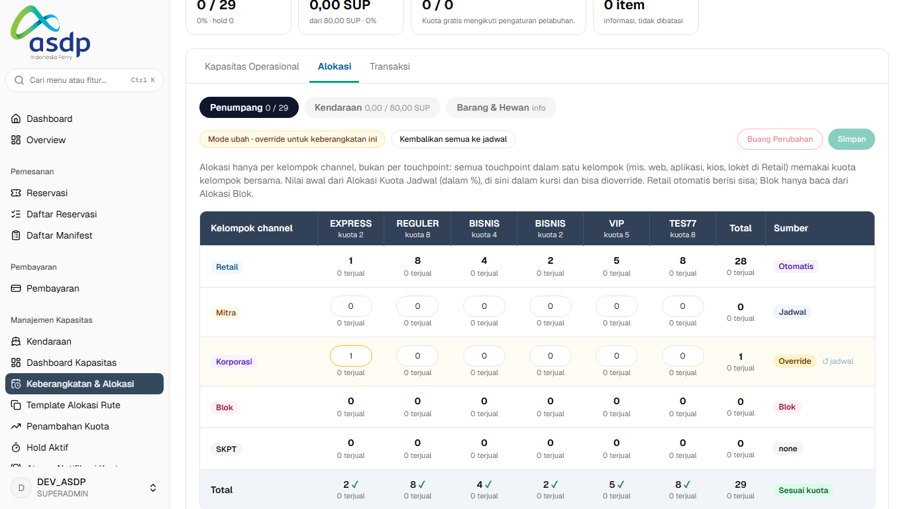
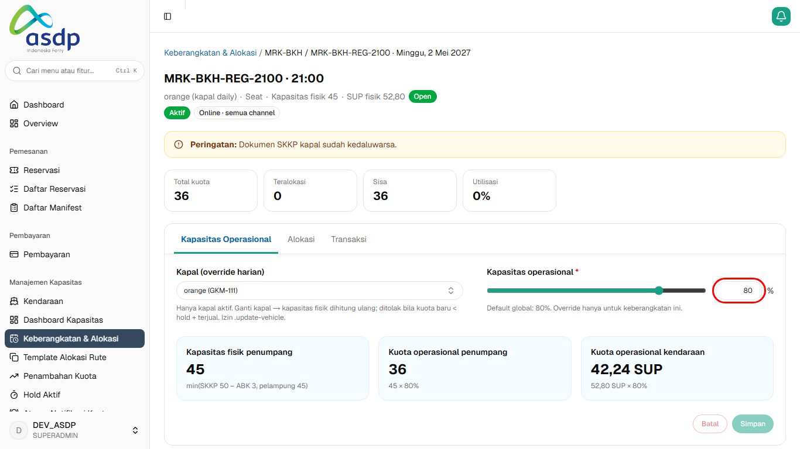

KC-T01 — Dua petugas mengedit alokasi bersamaan: perubahan petugas pertama hilang tanpa peringatan Langkah: 1. Petugas A dan Petugas B sama-sama membuka detail keberangkatan MRK-BKH-REG-2100 tanggal 2027-05-02 (dua browser/tab) 2. Keduanya membuka tab Alokasi 3. Petugas A: isi Mitra kelas REGULER = 2 → Simpan (berhasil) 4. Petugas B (tanpa reload): isi Korporasi kelas EXPRESS = 1 → Simpan 5. Reload halaman Ekspektasi: Mitra REGULER tetap 2 dan Korporasi EXPRESS = 1, ATAU Petugas B diberi peringatan "data sudah diubah, muat ulang" Aktual: Toast B: "Alokasi berhasil disimpan"; setelah reload Mitra REGULER = 0, Korporasi EXPRESS = 1 — perubahan A hilang

[TEMUAN] KC-T01 — Dua petugas mengedit alokasi bersamaan: perubahan petugas pertama hilang tanpa peringatan Langkah: 1. Petugas A dan Petugas B sama-sama membuka detail keberangkatan MRK-BKH-REG-2100 tanggal 2027-05-02 (dua browser/tab) 2. Keduanya membuka tab Alokasi 3. Petugas A: isi Mitra kelas REGULER = 2 → Simpan (berhasil) 4. Petugas B (tanpa reload): isi Korporasi kelas EXPRESS = 1 → Simpan 5. Reload halaman Ekspektasi: Mitra REGULER tetap 2 dan Korporasi EXPRESS = 1, ATAU Petugas B diberi peringatan "data sudah diubah, muat ulang" Aktual: Toast B: "Alokasi berhasil disimpan"; setelah reload Mitra REGULER = 0, Korporasi EXPRESS = 1 — perubahan A hilang (bukti: hasil\bukti\KC-T01_20261112-101406.png)
KC-T02 — Dua petugas mengedit kapasitas bersamaan: kapasitas % dari petugas pertama tertimpa nilai lama Langkah: 1. Petugas A dan Petugas B sama-sama membuka detail keberangkatan MRK-BKH-REG-2100 tanggal 2027-05-02 (dua browser/tab) 2. Petugas A: ubah Kapasitas operasional 80% → 50% → Simpan (berhasil) 3. Petugas B (tanpa reload, layar masih 80%): hanya ganti Kapal ke "orange" → Simpan 4. Reload halaman Ekspektasi: Kapasitas tetap 50% (hanya kapal yang berubah), ATAU Petugas B diberi peringatan konflik Aktual: Toast B: "Override kapasitas berhasil disimpan"; setelah reload kapasitas 80%, kapal "orange (GKM-111)" — kapasitas dari A tertimpa 80%

[TEMUAN] KC-T02 — Dua petugas mengedit kapasitas bersamaan: kapasitas % dari petugas pertama tertimpa nilai lama Langkah: 1. Petugas A dan Petugas B sama-sama membuka detail keberangkatan MRK-BKH-REG-2100 tanggal 2027-05-02 (dua browser/tab) 2. Petugas A: ubah Kapasitas operasional 80% → 50% → Simpan (berhasil) 3. Petugas B (tanpa reload, layar masih 80%): hanya ganti Kapal ke "orange" → Simpan 4. Reload halaman Ekspektasi: Kapasitas tetap 50% (hanya kapal yang berubah), ATAU Petugas B diberi peringatan konflik Aktual: Toast B: "Override kapasitas berhasil disimpan"; setelah reload kapasitas 80%, kapal "orange (GKM-111)" — kapasitas dari A tertimpa 80% (bukti: hasil\bukti\KC-T02_20261112-101430.png)
Tidak ada test yang gagal.
Tidak ada gangguan koneksi.
Tidak ada.
| No | Berkas | Test | Jenis | Status | Detik |
|---|---|---|---|---|---|
| 1 | UI\keberangkatan-bersamaan-ubah.spec.ts | Keberangkatan — edit bersamaan 2 petugas > [Positif] KC-01 setelah A menyimpan, B yang me-reload melihat data terbaru | PEMERIKSAAN | LULUS | 29.6 |
| 2 | UI\keberangkatan-bersamaan-ubah.spec.ts | Keberangkatan — edit bersamaan 2 petugas > [Temuan] KC-T01 alokasi: simpanan B (halaman lama) seharusnya tidak menghapus perubahan A tanpa peringatan | PEMERIKSAAN | LULUS | 26.8 |
| 3 | UI\keberangkatan-bersamaan-ubah.spec.ts | Keberangkatan — edit bersamaan 2 petugas > [Temuan] KC-T02 kapasitas: B ganti kapal di halaman lama seharusnya tidak menimpa kapasitas % yang baru disimpan A | PEMERIKSAAN | LULUS | 28.9 |